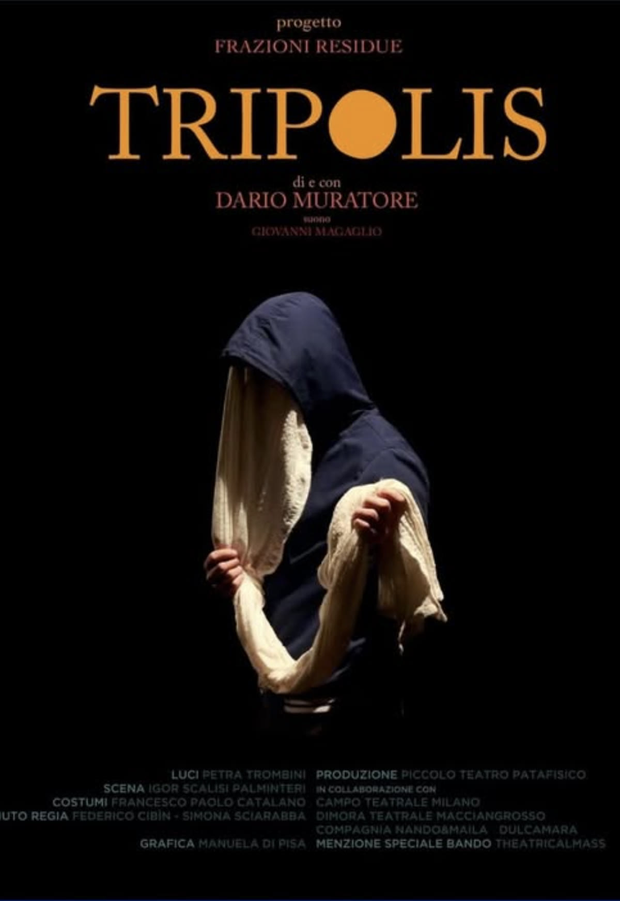

← Tutti i lavori
Tripolis
Tripolis racconta cocci di vita di una donna che ha vissuto in Libia, a Tripoli, durante il colonialismo italiano e che, come tante altre donne, ha lottato, resistito e ne è rimasta lacerata.
